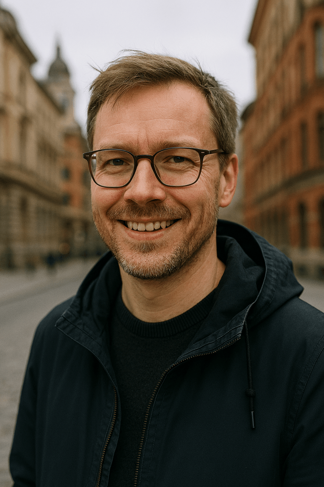
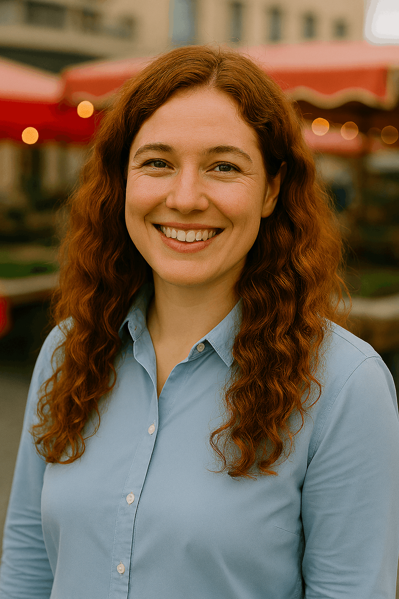

Meet our local guides
Our guides are not tour operators — they are locals who want to share their everyday city life. Each guide brings their own personality, interests, and favorite places. Instead of fixed tourist routes, they create relaxed walks based on conversation and shared curiosity. The goal is simple: explore the city in a way that feels natural and personal.

Pekka – Urban Explorer

Pekka enjoys discovering hidden streets, small design shops, and modern city spaces. He is curious about architecture and urban culture, and he likes to share stories about how the city has developed over time. His walks are thoughtful, inspiring, and slightly adventurous.
Anna – Calm & Cozy Routes
Anna prefers peaceful neighbourhoods, quiet parks, and small local cafés. She believes the best experiences happen when there is no rush. Her tours focus on atmosphere, conversation, and noticing the small details that make a place special.
Liisa – Culture & Everyday Life

Liisa loves local markets, art spaces, and community events. She shares stories about traditions, daily routines, and the people who make the city feel alive. Her walks are warm, open, and full of small discoveries.